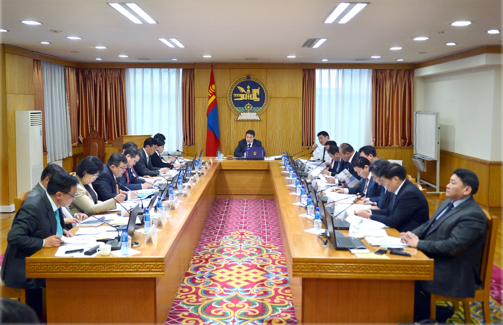
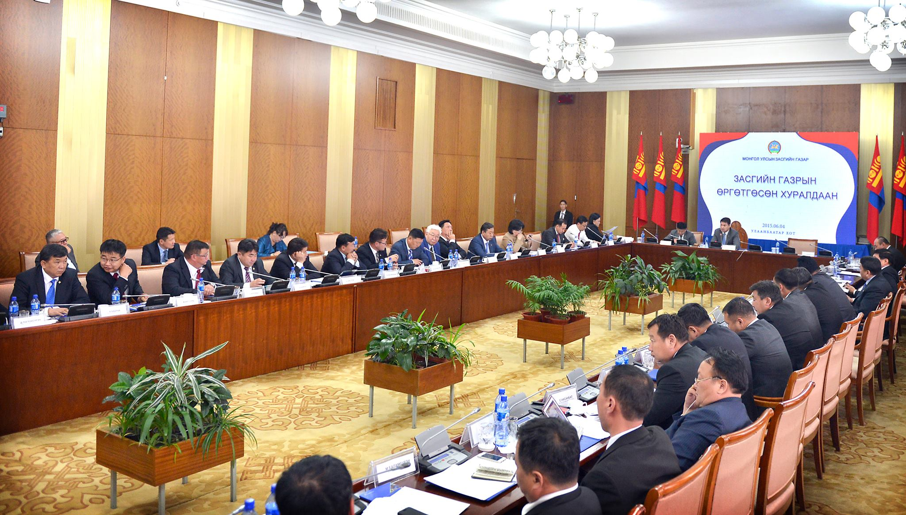

THE GOVERNMENT OF MONGOLIA
The Constitution legalised the tenet that "The Government is the highest executive body of the State". As the result of the State Great Khural's election the legal condition for the establishment of a new Government is created. The Government is accountable for its work to the State Great Khural and the term of its mandate is four years. The Government shall step down in its entirety upon the resignation of the Prime Minister or if half the members of the Government resign at the same time.
Carrying out the State laws and directing the economic, social and cultural development of the country, the Government exercises broad powers, determined by law.
The Government comprises the Prime Minister, the chief of Cabinet Secretariat and the ministers. The current Mongolian Government has 13 ministries.
Ministries of General Functions:
- Ministry of Foreign Affairs
- Ministry of Finance and Economy
- Ministry of Justice and Internal Affairs
Ministries of Special Functions:
- Ministry of Nature and Environment
- Ministry of Construction and Urban Development
- Ministry of Defence
- Ministry of Education, Culture and Science
- Ministry of Roads, Transportation and Tourism
- Ministry of Social Welfare and Labour
- Ministry of Fuel and Energy
- Ministry of Industry and Commerce
- Ministry of Food and Agriculture
- Ministry of Health
The Government has regulatory and implementing agencies under his direct control to formulate and carry out national policies. However, under the reform program, a few of the Government agencies were merged as one agency and the restructuring is continuing.